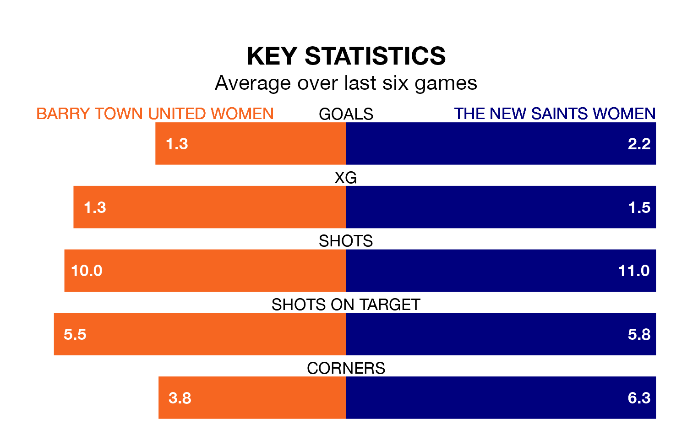

Struggling Barry Town United Women face The New Saints Women on Sunday looking to build on a win in their last league outing.
After securing all three points with a 0-1 victory over Wrexham Women on January 14, Barry Town United sit seventh in Welsh Premier Women's League.
They travel to play a The New Saints side fourth in the standings, who lost in their last match, 6-0 against Cardiff City.
With nine goals in 10 games so far this season, Barry Town United are the league's second-lowest scorers with 0.9 goals per game. And they are conceding more than average, letting in 31 goals at a rate of 3.1 per game.
The New Saints, meanwhile, are above average scorers, with 2.6 goals per game, compared to a league average of 1.9. They have conceded 2.4 goals per game.
In the last 10 years, Barry Town United and The New Saints have played each other on seven occasions. Barry Town United won four of them and The New Saints three.
On average, Barry Town United scored 2.4 goals and the New Saints 2.0 in those matches.
Their last meeting was on October 8, when The New Saints won 5-0 at home.
The home side are in disappointing form in Welsh Premier Women's League, with two wins and four losses from their last six games.
With three wins and three losses over that period, the New Saints' form is better – they have taken nine points from 18, compared to Barry Town United's six.
Updated: 13:09 (UTC), 17/01/24